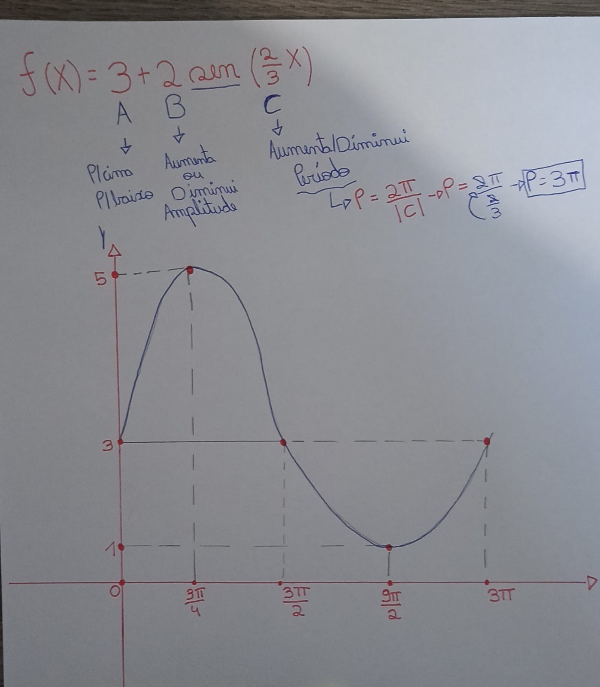
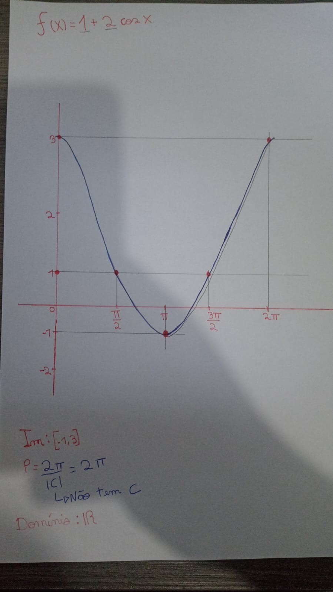
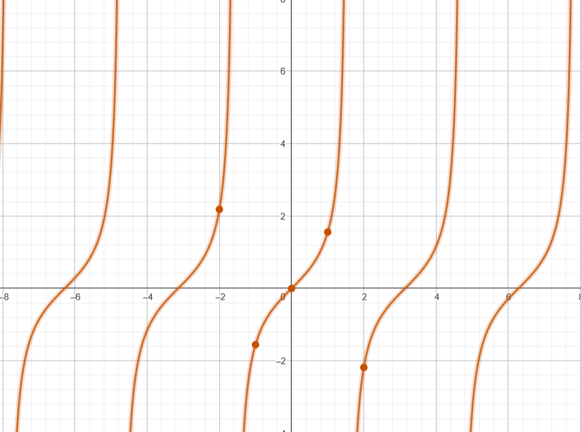
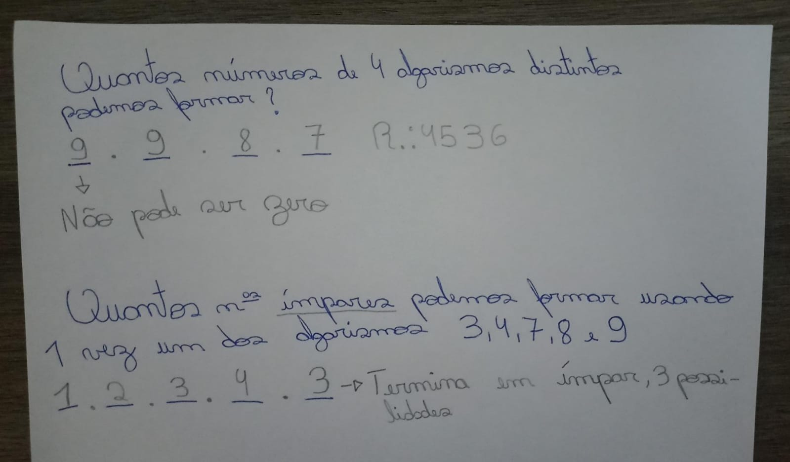
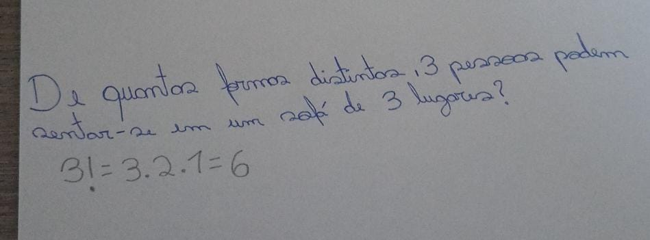
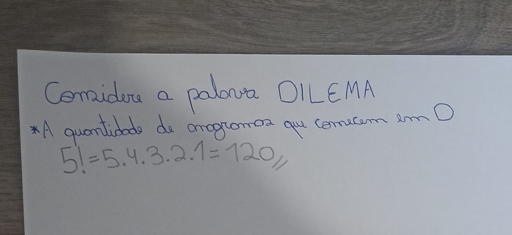

Funções Trigonométricas
Função SENO
No ciclo trigonométrico :
O seno relaciona o ângulo de um triângulo retângulo, com a razão entre comprimento do cateto oposto do ângulo e da hipotenusa. Da pra imaginar assim : Você está em uma roda gigante, e a altura que você alcança, depende do seno do ângulo que a roda vai girar
Fórmula: seno(θ) = cateto oposto / hipotenusa
Abaixo, fiz um exercício de construção do gráfico de uma função SENO, para mostrar como é o gráfico :

Note que, o gráfico começa no 0 (zero), mas por conta da função, que trouxe números que irão "elevar" o gráfico, ele começa no ponto 3, e chega no seu pico no ponto 5.
Função COSSENO
No ciclo trigonométrico :
O cosseno é parecido com o seno, mas consideramos o outro cateto, o cateto adjacente. Ele também é útil na física para calcular projeções e forças
Fórmula: cosseno(θ) = cateto adjacente / hipotenusa
Abaixo, um exercício de construção do gráfico da função COSSENO, para visualização de como é o gráfico :

Já diferente da função SENO, a função COSSENO começa no ponto 1. Neste caso começou em 3, por conta da fórmula.
Função TANGENTE
A tangente é meio "rebelde". Ela é a razão entre o seno e o cosseno. Usamos-a para entender inclinações de rampas, ou ângulos em terrenos.
Fórmula: tangente(θ) = seno(θ) / cosseno(θ)
Fiz também um exercício de construção do gráfico de uma função TANGENTE

Adicionei mais dois valores (45º e 60º, que estão entre o primeiro intervalo e o segundo) para formar a curva da tangente. Os pontos que tem o símbolo de inexistente significam que é onde a tangente vai para o infinito.
Aqui está esta mesma função, mas no GeoGebra, um software de matemática também utilizado pela professora Valéria :

Os pontos que a linha nunca cruzará, são as chamadas assíntotas
Aplicação Problema
Imagine que você está resolvendo uma questão do ENEM sobre a sombra de um prédio. Usando a tangente, é possível determinar a altura do prédio, sabendo o comprimento da sombra e o ângulo de incidência da luz solar. Um exemplo é:
Problema: A sombra de um poste tem 10 metros, e o ângulo de elevação do sol é 30°. Qual a altura do poste?
Resolvemos com: h = tangente(30°) × 10 = 5,77 metros.
Análise Combinatória
Princípio Fundamental da Contagem
Esse é o básico da análise combinatória. Se você tem 3 camisas e 2 calças, pode formar 3 × 2 = 6 combinações.
Alguns exercícios para melhor visualização do PFC (Princípio Fundamental da Contagem)

Nota-se que há uma pegadinha nesses 2 exercícios, no primeiro, você teria 10 possibilidades, contudo, não pode começar em 0, se não seria um número de 3 algarismos, e não de 4. Já no segundo exercício, obrigatoriamente o ultimo algarismo precisa ser um ímpar, e há 3 números ímpares possíveis de utilizar.
Situações com Repetição
Com repetição, você pode repetir os elementos. Imagine que você tem 3 sabores de sorvete e quer fazer combinações de 2 bolas. Pode ser chocolate com chocolate, chocolate com morango, e assim vai...
Fórmula: nr, onde n é o número de opções e r o número de escolhas.
Situações Sem Repetição
Aqui, cada elemento é usado uma única vez. Por exemplo, escolher um presidente e vice de um grupo de 5 pessoas. Não dá para ser a mesma pessoa nos dois cargos
Fórmula: n! / (n - r)!, onde n é o total de elementos e r o número de escolhas.
Permutação
A permutação é quando você organiza os elementos de diferentes formas. É como brincar de rearranjar letras
Permutação Simples
Se não há repetição, usamos: n!. Por exemplo, as letras A, B e C podem ser arranjadas de 6 maneiras diferentes (ABC, ACB, BAC...).
Entre as permutações, escolhi exibir 2 exercícios de permutação simples, um também envolvendo ANAGRAMAS :


No segundo exercício, apesar de ter 6 letras, fazemos 5 fatorial pois uma letra é fixa, nesse caso, a letra D, então ela é "tirada" do fatorial.
Permutação com Repetição
Se há repetição, ajustamos a fórmula: n! / p1! × p2!, onde p1 e p2 são as repetições. Exemplo: as letras AAB podem ser arranjadas de 3! / 2! = 3 formas diferentes.